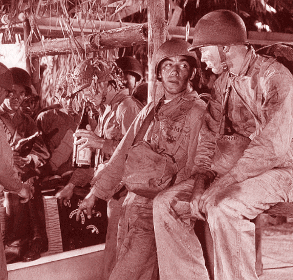
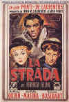
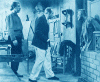

Anthony Quinn (1915-2001)
A ferocious hunger
for life was a hallmark on and off the screen for Anthony Quinn. Quinn was often accused of
overacting, but it just that vitality that infused his performances that made the actor a genuine
star.
I first remember Anthony Quinn in Viva Zapata, though I am certain I saw
him before. Starring opposite Marlon Brando as Eufemio, the brother of Emiliano Zapata, Quinn
made his first magnificent mark on his march to stardom in a major American film. Quinn held
his own with the moody Brando in powerful scenes, rending sympathy complexity from the role which
earned him an Academy Award as Best Supporting Actor in 1952. The womanizing, dangerous
Eufemio might have been spouting Quinn's off credo when he observes: "I have loved with all my
heart 100 women I never want to see again...."
Quinn's deep voice and hearty laugh never failed to make a screen impression.
The Mexican born actor was dark and swarthy and always moved with grace. His distinctive look
didn't stop him from playing

The bigger than life roles will always be those Quinn is best remembered for by his fans. As Zorba the Greek, the outgoing island peasant who teaches a visiting Englishman how to live, the actor captured audiences with his raw hunger for life. Zorba's free spirit is not only inspirational to "As for women, you made fun of me that I love them. How can I not love them? They are such poor weak creatures. They think so little. A man's hand on their breast they give you all they got."
Anthony Quinn really appeared in enough movies to build a film library around. To be sure, there were many forgettable roles between the early years when he was too often cast as an Indian in small supporting parts to the caviar days when Quinn could command the big bucks. During the forties Quinn was cast successfully in uniform in war movies like Back to Bataan and Quadacanal Diary. In China Sky he played a Chinese officer battling the Japanese. The Ox-Bow Incident gave Quinn an opportunity to exercise his acting chops as a victim of a lynch mob. For the Tyrone Power matador vehicle Blood and Sand Quinn braved the dust of the corridor and brandishing a saber with flourish, Quinn donned pirate garb for The Black Swan again supporting Power.
Quinn's international popularity after winning the Oscar© in 1952 led Italian director Federico Fellini to cast the actor in the transcendentally brilliant film La Strada. Quinn was incredible as Zampano the strongman.

The crude brutish nature of Zampano is obvious and not difficult to communicate, but it is with a pathetic underbelly that Quinn makes Zampano more than just beast. His performance is heightened by the magic of Guilietta Masina playing opposite him as Gelsomina, the sad-eyed dull girl he takes on as an assistant for his carnival act. The image of Quinn snapping a chain wrapped around his chest by expanding his muscles to the bursting point is an indelibly classic cinema image. In 1954, the same year as La Strada, Quinn starred in the lamentable Italian production Attila. At least he had Sophia Loren to ogle during the production while drooling at the gates of Rome. Ulysses, another Italian job, cast him in the role of chief suitor for the hand of Penelope with Kirk Douglas starring as the fiery wanderer Ulysses. Perhaps the Italian adventure prompted Vincente Minnelli to think of Quinn when casting Paul Gauguin in Lust for Life, the story of Vincent Van Gogh. With Douglas as the tortured painter giving a brilliant performance, it was Quinn who came away with his second Supporting Actor Oscar© for all of eight minutes screen time.
It's a tribute to Quinn's magnetism that he captured the critics and Academy members alike with short incisive acting strokes bringing to life the colorful fellow artist and friend of Van Gogh. The busy fifties included other entertaining work, as a pirate again in Against All Flags with Errol Flynn. Incredibly, Quinn appeared in some forty movies during this productive decade.Between 1961 and 1964 Quinn appeared in a quartet films that first come to mind with think of the actor. The Guns of Navarone was a huge action hit and Quinn's Greek Colonel Andrea Stavros was a plumb part and central to the success of the terrific ensemble work by the actors. The following year was another sterling one for the actor. Quinn's broad performance as the Arab sheik Auda abu Tayi in Lawrence of Arabia was hailed by critics and audiences alike. Again, it was Quinn's magnificent presence that broad the character to life. Quinn drew heavily on his peasant background to create a proud, child-like character of the Arab warrior. Casting reminiscent of La Strada followed with his outstanding portrayal of the sad lug of a heavyweight fighter in the powerful drama Requiem for a Heavyweight. Then came Alexis Zorba. Quinn played the part like he was born to it. Zorba the Greek was a big hit with audiences in 1964. Zorba's free spirit connected with audiences. When Quinn takes Alan Bates to the beach and teaches him to dance and free his spirit, audiences wanted to dance as well. For the rest of the sixties there were good and bad films, but nothing approached the power of the quartet of films that marked the decade and firmly made Quinn Hollywood legend.
As the next decades rolled around, Quinn's greatest screen moments were past. Long a fascinating character on the international scene, Quinn played at painting and sculpture, stayed in the public light. The films he made were mostly forgettable and one must suppose had more to do with making money than making art. Quinn's style of acting was less in favor. The big gestures of the external artist were thought to be simply over-acting. Of the seventeen films he made in the seventies, only Across 110th Street in 1972 was a truly solid effort, though not memorable.
Quinn will ever be remembered for Zorba, Zampano Zapata's brother, and Auda. Quinn got away with being too big. Even near the end of his eight decade career, the actor unearthed a wonderful characterization with the role of Don Pedro Aragón in the 1995 A Walk in the Clouds. As the grandfather Aragón , the eldest of the vineyard owning clan, Quinn makes the most of every scene stealing moment. Doting on chocolates, he readily accepts the outsider Paul Sutton and helps influence him through some difficult times at Casa Aragón. There's a sense of pleasure, pleasure of the characters and pleasure of the actors, in these warm scenes. It's hard to believe that Quinn was eighty-years-old when Clouds was released. His screen energy is wonderful, investing every scene with a joyful buoyancy.
The actor's only stab at directing came with in a big way under the production of his then father-in-law Cecil B. DeMille. The Buccaneer starred box office biggies Yul Brynner and Charlton Heston in one of the big road show productions of 1958. Quinn did a good chair in the director's chair, but the experience must not have been inspiring since it never was repeated.
Quinn was married to Katherine DeMille, adopted daughter of director Cecil B. DeMille in 1937. The couple remained married for 26 years. Quinn appeared in a number of DeMille films beginning with the 1936 The Plainsman. His marriage to Katherine had an acrimonious break-up after Quinn fathered two children out of wedlock with an Italian costume designer. After the divorce, Quinn legitimized his relationship with Yolanda Addolari and they remained together for 31 years. Quinn, who had been suffering from cancer, succumbed to the disease in Boston on June 4, 2001. He had recently completed his final film, Avenging Angelo, in which he co-starred with Sylvester Stallone. The actor was never afraid of the limelight and was outspoken in public, often admitting his extra marital affairs and acknowledging the children he fathered out-of-wedlock. Along with some one-hundred-and-fifty film appearances, Quinn is survived by twelve children and his companion, Katherine Benvin, the mother of his two youngest children Antonia, 7 and Ryan, 5.
Click on a thumbnail poster for larger image.


The Academy of Motion Picture Arts
Sciences and has a soft spot reserved for peers taking on the battle of the bottle. Click on the
bottle to learn more about the magic of Oscar® Formula One.

A new Films on Disc space dedicated to purging accumulated home
theater angst and other movie related frustrations, with a measure of praise to balance the
vitriol. The first column takes on:
Inserts and the Pop-Up Window

 Have you visited Home Theater
Talk lately? One of the friendliest places on the Net for Home Theater and DVD discussion, you
can get help for installation problems or simply share your opinions with other Vidiots.
Have you visited Home Theater
Talk lately? One of the friendliest places on the Net for Home Theater and DVD discussion, you
can get help for installation problems or simply share your opinions with other Vidiots.

Classic Images on classic films, featuring news, reviews, obituaries, film convention reports,
and detailed articles on film people, from the most famous to the most obscure

The home of John Tisch's invaluable Poster Price Almanac. Every serious poster collector
uses the Almanac as a reference.
 A huge selection of French movie
posters with images galore. Don't miss this site if you ate interested in lovely French posters.
A huge selection of French movie
posters with images galore. Don't miss this site if you ate interested in lovely French posters.

Information on film sound in theaters and home theaters. Lots of helpful information provided in a
handsome interface.
 Brad Lang continues to add more interesting material to the extensive
collection at Classic
Movies. Everything from actors and actress to your favorite directors is
linked at the site.
Brad Lang continues to add more interesting material to the extensive
collection at Classic
Movies. Everything from actors and actress to your favorite directors is
linked at the site.

ISF Monitor Calibrations in the
Tristate New York area. Lots of hardware info and frequent hardware peaks from video expert Kevin
Miller.They may be judgmental, but that's the point, isn't it. Lots of DVD reviews plus news and
more.

DiscReviews.com
is a new DVD review site
with a slick interface.
 Jim
Doolittle
Jim
Doolittle
ISF Instructor. Premier calibrator and expert front projection system setup technician in the
Boston area.

Click on the DVD MIA symbol for
profiles of DVDs missing in action.
Add films to the DVD MIA Master List by filling out
a simple form. Click Here
|
Home Theater Talk
Cartoons |